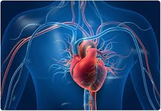
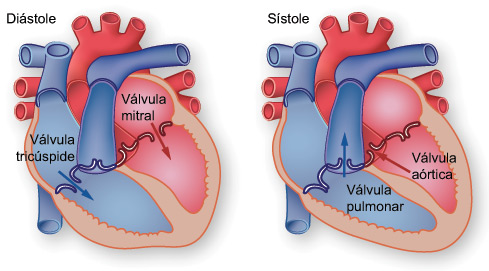

| Corazón | |
| El corazón es un órgano del tamaño aproximado de un puño. Está compuesto de tejido muscular y bombea sangre a todo el cuerpo. La sangre se transporta a todo el cuerpo a través de los vasos sanguíneos, unos tubos llamados arterias y venas. El proceso de transportar la sangre en todo el cuerpo se llama circulación. Juntos, el corazón y los vasos sanguíneos componen el aparato cardiovascular. |  |
| El corazón tiene cuatro cavidades (dos aurículas y dos ventrículos). Hay un tabique (septo) entre las dos aurículas y otro entre los dos ventrículos. Las arterias y las venas entran y salen del corazón. Las arterias llevan la sangre hacia afuera del corazón y las venas la llevan hacia adentro. El flujo de sangre a través de los vasos y las cavidades del corazón es controlado por válvulas. |  |